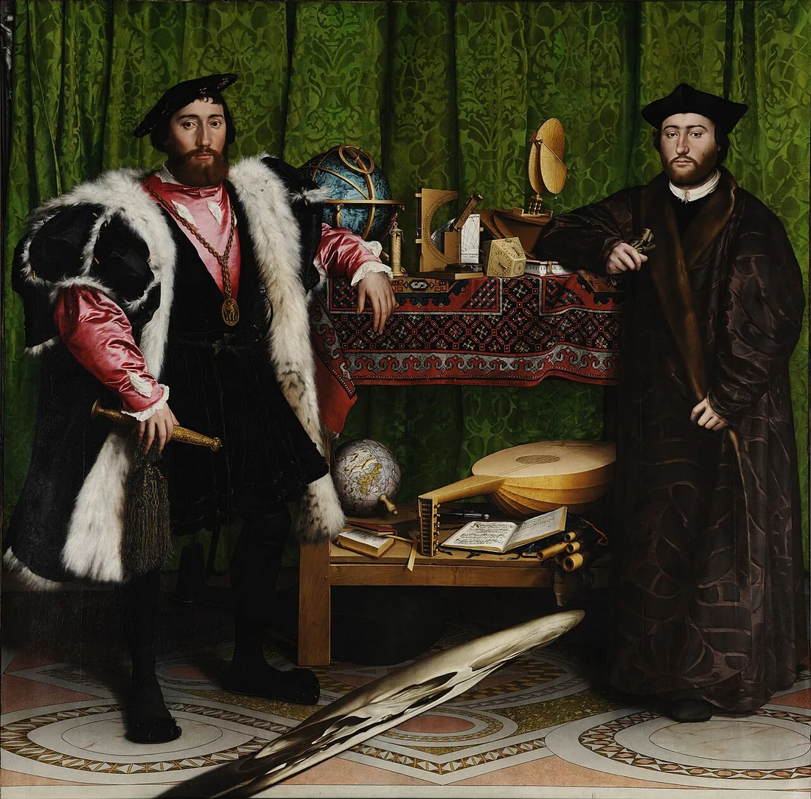

Sessão 04 / 10 · Identidade · história do teatro / Grécia
Construir uma pessoa, encontrar uma voz
Como escrevemos alguém sem o reduzir a uma etiqueta?
Três horas · investigação, discussão e escrita

Personagens situadas e primeira microcena original.
1 / 5
Retomar a pergunta
Recupera uma pessoa, situação ou pergunta que apareceu na investigação. Se for material real, distingue o que foi documentado daquilo que o grupo vai inventar. A oficina de escrita pode construir ficção sem atribuir falas inventadas a uma pessoa real.
2 / 5
Ler e observar
Uma personagem ganha espessura pelo que sabe, pretende, faz e encontra como resistência. Uma voz dramática não é automaticamente o autor. O diálogo pode confrontar objetivos diferentes, em vez de distribuir uma resposta certa e outra errada. A cápsula grega permite comparar voz individual e voz coletiva.
Grécia · diálogo, coro e conflito
No teatro da Atenas antiga, as representações integravam festivais e a vida da cidade. Na tragédia, personagens e coro fazem ouvir posições que não se reduzem a uma única voz. Em Antígona, de Sófocles, a proibição de sepultar Polinices entra em conflito com a ação de Antígona. A peça permite examinar exigências incompatíveis; não oferece uma equivalência simples com a democracia atual. Esta apresentação é uma síntese didática, não uma citação.
Aplicar. No exemplo da ficha, escreve duas linhas de uma voz coletiva que questione a decisão das personagens. Depois indica o que essa voz permite ouvir que as duas personagens não diziam.
Fontes da cápsula
Exemplo didático; redação do LENTE. Não é uma citação das obras.
Materiais para observar e aprofundar
3 / 5
Experimentar e discutir
- Identifica no exemplo o que é observável e o que uma personagem está a supor.
- Formula o objetivo de cada voz e uma razão para a resistência que encontra.
- Acrescenta uma intervenção coletiva que faça uma pergunta real às duas posições.
Depois de decidir · confrontar razões
A voz coletiva não precisa de saber tudo nem de encerrar a discussão. Uma personagem não se torna convincente apenas por receber uma biografia: o leitor precisa de reconhecer o que tenta fazer na cena. A hipótese sobre alguém deve continuar distinguível de um facto.
4 / 5
Oficina
Escreve uma microcena de seis a dez réplicas com duas vozes e pelo menos duas indicações de ação, pausa ou som. Uma personagem deve tentar conseguir algo que a outra não aceita de imediato. Usa o exemplo como ponto de partida e transforma-o.
5 / 5
Rever e fechar
Outro par lê sem a explicação do autor: quem quer o quê, o que impede e o que ainda está em aberto? Revê uma fala e uma indicação. Regista o efeito da alteração.
Verificar no trabalho
- Cada voz tem um objetivo reconhecível.
- As indicações acrescentam ação ou informação.
- A pessoa não se reduz a uma característica.
O registo fica neste aparelho; não é uma classificação.
Guia de condução · três horas
- Retomar a pergunta · 15 min
- Ler e observar · 35 min
- Experimentar e discutir · 30 min
- Oficina · 70 min
- Rever e fechar · 30 min
Retomar a investigação anterior sem voltar a exigir a mesma entrega. A exploração e a microcena abrem a oficina seguinte: argumento e guião em teatro, cinema ou áudio. O bloco de laboratório inclui dez minutos de pausa.
Uma máquina do professor é suficiente: projetar, pedir uma decisão antes de revelar e escrever nos materiais do grupo. Sem rede, usar o texto da sessão e os materiais previamente preparados.